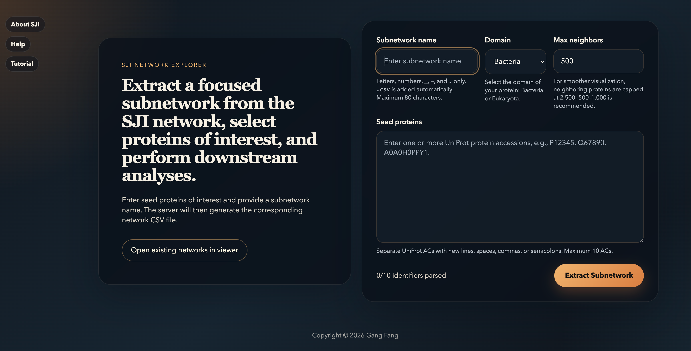
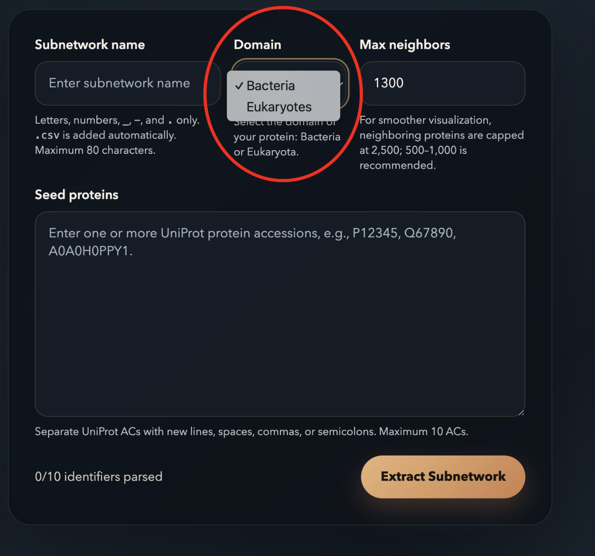
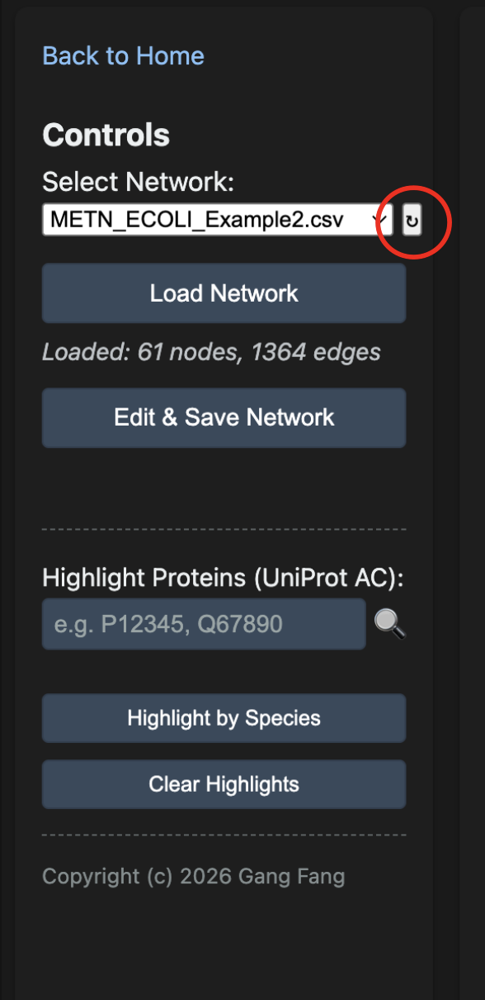
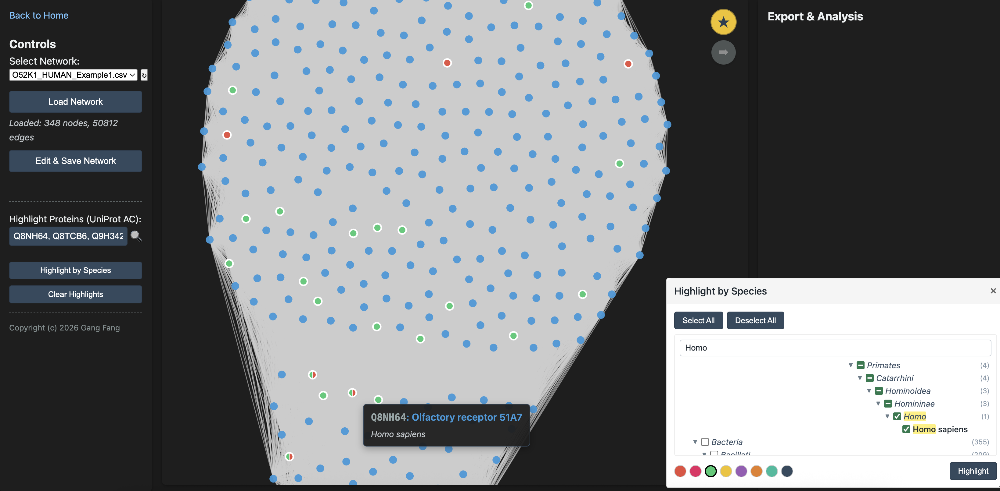
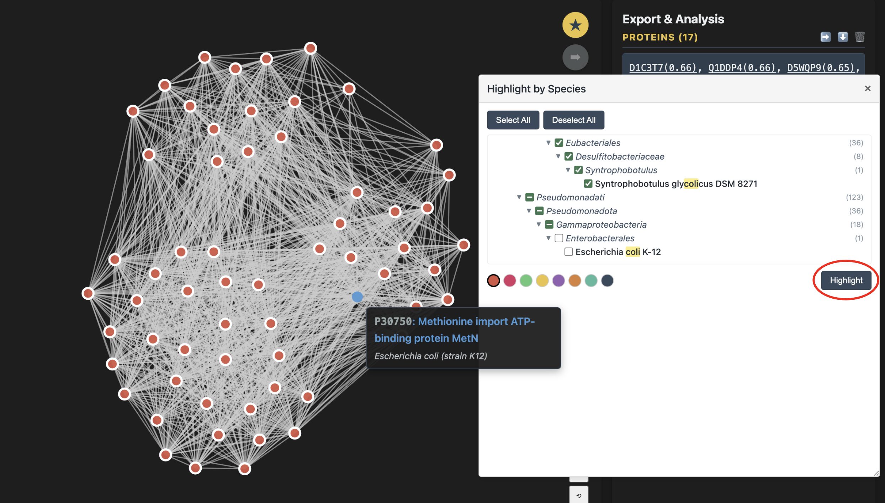
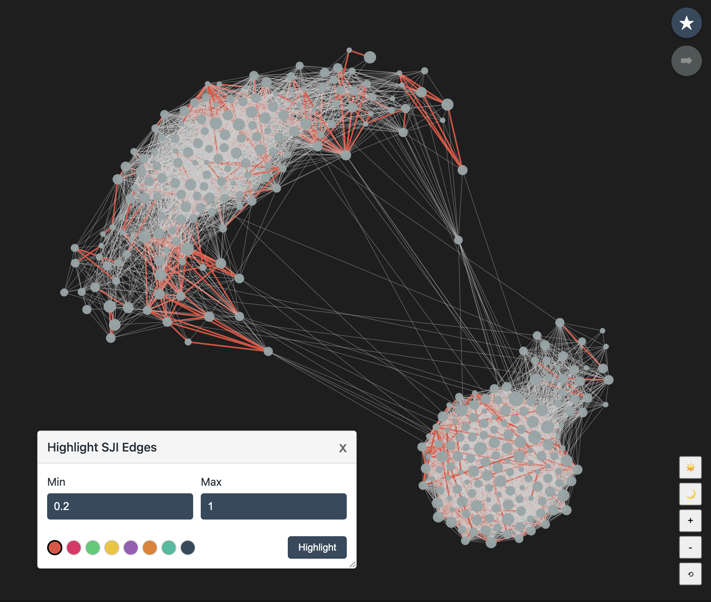
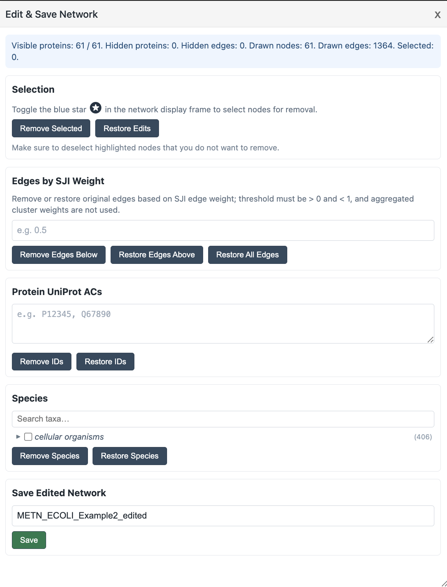
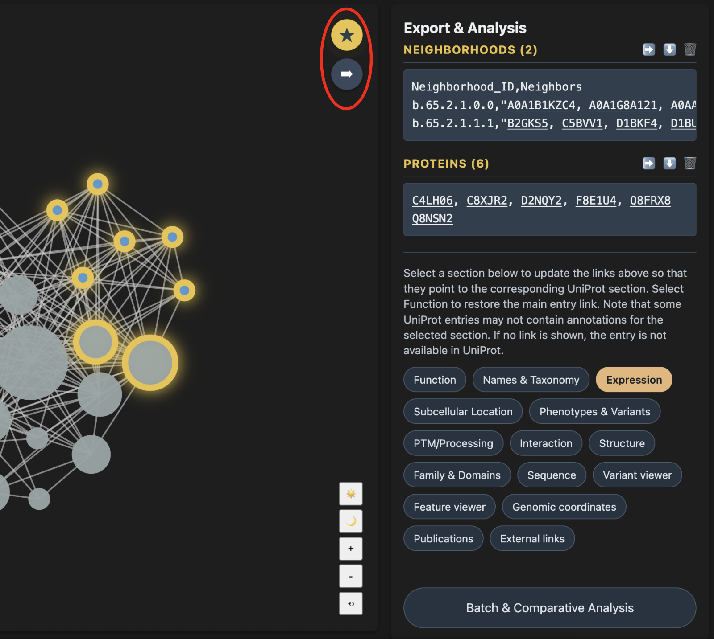
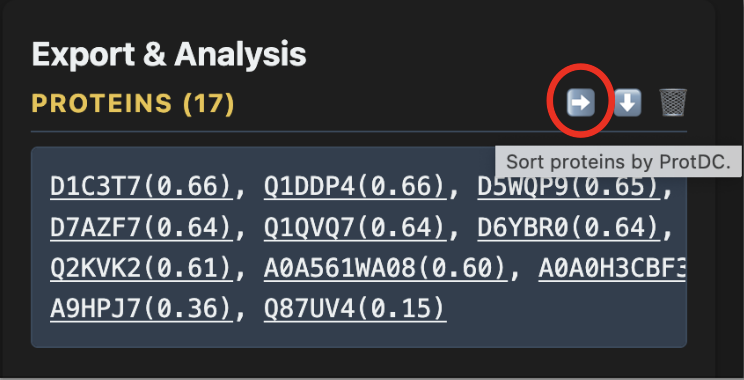
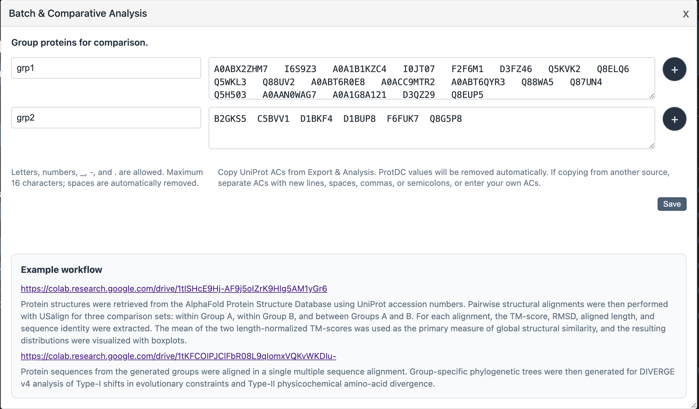

From network topology and neighborhood structure to
biology insight
A complete walkthrough of the Network Visualization Platform — installation, data ingestion, interactive exploration, and downstream analysis.
Platform Overview
The SJI Network Explorer lets you extract subnetworks centered on your specified proteins from a large, pre-built SJI network. You can then explore these subnetworks interactively and export protein lists for downstream structural or evolutionary analysis.
The pre-built SJI network includes 51 eukaryotic and 355 bacterial UniProt reference proteomes. All proteins are represented by UniProt accessions to make protein annotation retrieval easier. As a result, queries against the pre-built network, as well as subnetwork extraction, are limited to UniProt accessions.
The package also includes the topN software and
a set of Python scripts that allow users to attach their own
proteins or proteomes to the pre-built network. The added
proteins do not necessarily need to correspond to UniProt
entries. Their potential annotations can be inferred by
examining the network topology and the UniProt annotations of
their neighboring proteins.
Guidance on building a custom SJI network is also provided. For these advanced topics, please refer to the end of this tutorial.
Proteins are organized into pre-built neighborhood clusters. To reduce memory usage and simplify the initial view, the viewer displays these clusters in a collapsed state by default, with each cluster represented as a single large node. Click a cluster to expand it and view its individual protein members.
First-Time Setup (Docker)
The SJI Network Explorer is distributed as a Docker image. The image includes the web server, the subnetwork extractor, and all required runtime tools, but it does not include the data. Data are downloaded separately and mounted into the container.
- Install Docker Desktop. Install Docker
Desktop if it is not already installed:
You may need to create or sign in to a Docker account during installation. After installation, open Docker Desktop and make sure it is running.Link
https://www.docker.com/products/docker-desktop/ - Pull the Docker image. Open Terminal and
run:
Shell
docker pull ghcr.io/gang-fang/sji-network-explorer:latest - Download the data files. The simplest
option is to download
data.tgzfrom Zenodo:Alternatively, you can use the GitHub release assets:Linkhttps://zenodo.org/records/20097975?preview=1For the GitHub release workflow, download all requiredLinkhttps://github.com/gang-fang/network-viz-platform/releases/tag/qfo-reference-proteomes-data-2026.gzfiles into an empty folder and also downloadinstall_data.shto the same folder. - Decompress and organize the data. In
Terminal, go to the folder containing the downloaded files.
If you downloaded
data.tgzfrom Zenodo, run:Shellcd /path/to/your/downloaded/filesIf you downloaded the GitHub release assets instead, make the installation script executable:Shelltar -xzf data.tgz ls dataRun the script:Shellchmod 755 install_data.shThis will create aShell./install_data.shdata/folder with the required structure. - Start the server. Stay in the same
folder that contains the
data/folder, then run:When the server starts successfully, open Chrome or Firefox and visitShelldocker run --rm \ --name sji-network-explorer \ -p 3000:3000 \ -v "$PWD/data:/app/data" \ ghcr.io/gang-fang/sji-network-explorer:latesthttp://localhost:3000. Chrome or Firefox is recommended. Safari may be slower when handling large interactive network views. - Stop the server. To stop the server, open
another Terminal window and run:
Shell
docker stop sji-network-explorer - Restart the server. To restart the
server, go back to the folder that contains the
data/folder and run:Shelldocker run --rm \ --name sji-network-explorer \ -p 3000:3000 \ -v "$PWD/data:/app/data" \ ghcr.io/gang-fang/sji-network-explorer:latest
You can create your own shell alias to start the server more easily:
alias start-sji='docker run --rm --name sji-network-explorer -p 3000:3000 -v "$PWD/data:/app/data" ghcr.io/gang-fang/sji-network-explorer:latest'Then start the server by running:
start-sjiRun this shortcut from the folder that contains the data/
folder.
Chrome or Firefox is recommended for large interactive network views. Safari may be slower with larger subnetworks.
Run from a Git Clone
Use this path if you want to run the server directly from the repository, modify the source code, or use the advanced preprocessing scripts. The Docker path above is usually simpler for first-time use.
- Clone the repository.
Shell
git clone https://github.com/gang-fang/network-viz-platform.git cd network-viz-platform - Install Node.js dependencies.
Shell
npm install - Install Python dependencies. These are
needed for subnetwork extraction and the preprocessing
workflows when running from a cloned repository. They are
not installed by
npm install.Shellpython3 -m venv .venv source .venv/bin/activate pip install -r requirements.txt - Build
topN. The preprocessing workflows expect the compiled executable undertools/bin/topn.Shellcd tools/preprocessing/topN_cpp make cd ../../.. - Download and organize the release data.
The recommended option is to download
data.tgzfrom Zenodo:PlaceLinkhttps://zenodo.org/records/20097975?preview=1data.tgzin the repository root and run:Alternatively, use the GitHub release workflow described in the Docker setup section above: download all requiredShelltar -xzf data.tgz ls data.gzfiles andinstall_data.shinto an empty folder, then run:This creates theShellchmod 755 install_data.sh ./install_data.shdata/folder used by the local server. - Configure the environment.
EditShell
cp .env.example .env.envas needed. If you created the virtual environment above, setPYTHON_COMMAND=.venv/bin/python. - Ingest the data and start the server.
Or combine ingestion and startup:Shell
npm run ingest npm startThen openShellnpm run start:ingest-and-servehttp://localhost:3000in Chrome or Firefox.
The Docker image installs only the minimal runtime
dependencies. A cloned repository uses requirements.txt
so that both subnetwork extraction and preprocessing scripts
are available.
The Landing Page
Once the server is up, http://localhost:3000
shows the SJI Network Explorer landing page. There are two
things to know: the saved networks,
and the extraction form on the
right where you build a focused subnetwork from seed proteins.

You can add or delete subnetworks directly in /data/subnetworks,
then open them by selecting Open
existing networks in viewer from the left panel to go
directly to the viewer. See the Advanced
Topics section below for details.
Extracting a Sub-Network
From the landing page, fill in the form on the right. The platform expands each seed protein outward through the SJI network and returns a focused subnetwork in CSV format, ready for visualization.

-
1Subnetwork name — letters, numbers,
_,-, and.only. The.csvextension is added automatically. Max 80 characters. -
2Domain — select Bacteria or Eukaryotes based on where your proteins live. This selects the correct pre-built index. See the Advanced Topics section below for instructions on building custom indexes.
-
3Max neighbors — total nodes in the resulting subnetwork (cap 2,500; 500–1,000 makes the visualization readable).
-
4Seed proteins — up to 10 UniProt ACs separated by spaces, commas, semicolons, or new lines.
The extraction may take from a few seconds to several
minutes, depending on your computer. Once the extraction is
complete, the server saves a CSV file under your mounted
directory, such as data/networks/, and the Open in Viewer button will appear.
Click this button to inspect the subnetwork interactively.
Your seed protein will be automatically filled into the Highlight Proteins
box in the viewer.
To highlight your seed proteins, click Highlight Proteins (UniProt AC), choose a color, and then click anywhere outside the color palette to close it. You can expand or collapse clusters to examine the subnetwork in greater detail. Keep a note of any proteins of interest; you can always enter them in the Highlight Proteins box to locate them within the subnetwork.
Tip: For large subnetworks, network detection may be delayed. If the number of nodes in your subnetwork appears incomplete, refreshing the browser should resolve the issue.
Each seed first gets a guaranteed local neighborhood, then remaining budget is filled globally by merit score — nodes reached by multiple seeds are boosted. The result is a single connected subnetwork centered on your seeds.
Loading a Network in the Viewer
The viewer's left panel — Controls — is used to load, edit, and manage networks.

The Load Network button renders a physics-based force layout that runs briefly and then settles. The status line under the dropdown confirms how many nodes and edges loaded.
If you have just extracted a subnetwork and it does not appear in the dropdown list, click the small ↻ button next to the dropdown (red circle) to refresh the list without reloading the page.
Highlighting Proteins
You can color-mark proteins of interest in two ways: by UniProt accessions (the input field in the left panel) or by species (next section).
-
1Type one or more UniProt ACs into Highlight Proteins (UniProt AC) — separated by spaces, commas, or semicolons.
-
2Press Enter or click the 🔍 icon. A color picker appears — pick a swatch to color the matching nodes.
-
3Multiple searches can be performed using distinct colors. Each search generates an independent visualization layer. When members of a cluster are assigned to multiple layers, the corresponding cluster node is displayed as a pie chart. For example, after highlighting a set of UniProt accessions, you may want to identify which proteins are of human origin. To do so, add a new layer by selecting Highlight by Species and assigning a different color. The corresponding nodes will then be displayed with pie-chart patterns.
-
4Use Clear Highlights to remove all highlights and selections. Note that this button is often overlooked, which may lead to unintended selections.

Filtering by Species
Click Highlight by Species on the left panel to open a draggable taxonomic tree. Drill down through the taxonomy, check the species you care about, then pick a color and click Highlight.
Note that the species panel includes Select All and Deselect All buttons. For example, if you want to retain only human and mouse proteins in your subnetwork and remove proteins from all other species, first click Select All, then uncheck only human and mouse. Next, click Highlight so that proteins from all other species are selected. You can then click Edit & Save Network to generate a new species-focused subnetwork.

The species panel is draggable — grab its header to move it anywhere on screen so it doesn't cover the graph.
Highlighting SJI Edges
Click Highlight SJI Edges in the left control panel to color edges whose SJI values fall within a selected range. This is useful when you want to visually inspect strong or weak relationship bands without editing the network.
-
1Open Highlight SJI Edges. The popup starts with Min set to 0 and Max set to the largest SJI value available in the loaded network.
-
2Enter a range from 0 to 1, inclusive. For example, Min 0.5 and Max 1 highlights edges with SJI values between 0.5 and 1. If an invalid value is entered, the fields reset to the full 0 to 1 range.
-
3Choose a color swatch and click Highlight. Matching edges are drawn with the selected color and a thicker line so the highlight remains visible even when the original edges are thin.
-
4Use Clear Highlights to remove both protein highlights and SJI edge highlights, returning the view to its original visual state.

SJI edge highlighting is visual only. To permanently remove weak or strong edges and save a new network, use Edit & Save Network and its Edges by SJI Weight controls.
In dense networks, highlighting low-SJI edges can be hard to interpret because weak edges may appear throughout the graph. A more useful check is to highlight edges above your chosen threshold. If the edges between communities remain unchanged, those communities are weakly connected.
Edit and Save Networks
Use Edit & Save Network to remove proteins or edges from the current network view and save the edited result as a new network file. This is useful when you want to focus on a smaller biological subset, removing less relevant species, trimming weak SJI edges, or reducing the size of an overly large network.

-
1Open the popup with Edit & Save Network button in the left control panel.
-
2Use Selection section to remove proteins from the network. First, confirm that the currently highlighted or previously selected proteins are the ones you intend to remove. If not, click Clear Highlights at the bottom of the left control panel to clear the current selection.
Next, toggle the blue button in the network viewer; its color will change to gold. You can then click to select clusters or individual proteins for removal. You can also drag the mouse to draw a selection box and select multiple nodes at once.
Finally, click Remove Selected to remove the selected nodes. To undo the changes and restore the network to its previous state, click Restore Edits. -
3Use Edges by SJI Weight to trim weak links. For example, Remove Edges Below
0.5removes edges with SJI below 0.5, while Restore Edges Above0.3can restore previously removed edges with SJI above 0.3. -
4Use Protein UniProt ACs or Species when you want to remove or restore proteins by accession number or taxonomic group.
-
5Enter a new name in Save Edited Network and click Save. The edited CSV is written to the mounted network folder and can be loaded from the viewer like any other network.
Save edits under a new name rather than overwriting the source network. This keeps the original extraction available if you need to revisit the full topology later.
Export & Analysis Panel
In the viewer panel, you interact with the network, while the right-side panel displays the proteins selected for detailed analysis. The system therefore has two modes: viewer mode and export mode. These modes are controlled by the blue star button at the top right of the viewer panel.
Both individual protein nodes and entire clusters can be exported. Toggle the blue star button so that it turns gold; this switches the system to export mode. In this mode, clicking a node no longer collapses or expands a cluster. Instead, it selects or deselects the node.
In export mode, click the arrow immediately below the blue star button to send the selected nodes to the export panel.
From the export panel, you can sort proteins by degree centrality, open direct UniProt links, select different UniProt annotation categories, download the protein list, or send the proteins for batch analysis.


ProtDC (Protein Degree Centrality) measures how well-connected a protein is within its neighborhood. Higher ProtDC = more central within its cluster, so sorting top-down surfaces likely "hub" candidates first.
Batch & Comparative Analysis
The Batch & Comparative Analysis popup (accessible from the UniProt section buttons) lets you define named groups of proteins and save them as separate files for cross-group comparison.
-
1Click Batch & Comparative Analysis in the right panel section controls. A draggable popup appears.
-
2Enter a group name (letters, numbers,
_,-,.— max 16 characters) and paste UniProt ACs from the Export panel into the accessions area. ProtDC values in parentheses are stripped automatically. -
3Click + to add more groups. Groups must have unique names.
-
4Click Save. The server writes one text file per group to
data/exports/. You can then load these files into the example Colab notebooks for structural alignment or phylogenetic analysis.

The popup contains links to two Colab notebooks: one for pairwise structural alignment with USalign, and one for multiple sequence alignment and DIVERGE v4 analysis of evolutionary shifts.
URL Parameters & Easy Access
The pages accept query parameters for deep-linking and automation.
viewer.html
| Parameter | Example | Effect |
|---|---|---|
| network | ?network=my_proteins.csv |
Loads and displays this network automatically on page open |
| seeds | &seeds=P04637,O15151 |
Pre-populates the highlight search field with these accessions and executes the search immediately |
Example — open the viewer on a specific network with two proteins pre-filled in the highlight box :
http://localhost:3000/viewer.html?network=my_proteins.csv&seeds=P04637,O15151Copy the viewer URL containing ?network= to
access a specific network and easily highlight seed
proteins.
Build Your Own SJI Network
This workflow runs outside the Docker container. Clone the repository to access and edit the pipeline scripts:
git clone https://github.com/gang-fang/network-viz-platform.gitThe package includes a template workflow for building a custom SJI network from a selected set of UniProt reference proteomes. The detailed scripts are located in:
tools/preprocessing/pipelines/build_your_net_scriptsRun the workflow in the order indicated by the script names. Each script validates the expected inputs from earlier steps and writes outputs used by later steps.
-
1
01_download_proteome_list.shdownloads and prepares the proteome FASTA files listed in your proteome ID file. -
2
02_run_topn_all_vs_all.shruns all-against-alltopNcomparisons. Build thetopnexecutable from the cloned repository before running this step. -
3
03_run_make_2d_all_vs_all.shconverts thetopNoutputs into two-dimensional similarity inputs for signal detection. -
4
04_run_son_spectral_cluster_all_vs_all.shrunsson_spectral_final.pyto separate signal from noise for the 2D similarity outputs. -
5
05_run_build_network_all_vs_all.shbuilds the SJI network edge table from the detected signal sets. -
6
06.1_leiden_01_preprocess.shpreprocesses the SJI edge table for Leiden clustering by converting node ids into zero-based integer IDs. -
7
06.2_leiden_02_global.shruns global Leiden clustering. -
8
06.3_leiden_03_refine.shrefines neighborhoods and optionally parallelizes refinement jobs. -
9
06.4_leiden_04_restore_uniprot_ids.shrestores UniProt accessions after integer-ID clustering. -
10
07_build_uAC_taxonomy_mapping.shbuilds the UniProt accession to taxonomy mapping used by node attributes, along with two files required by the package:commontree.txtandNCBI_txID.csv. Copy these two files to/data/NCBI_txID/. -
11
08_run_ct_attr.shcreates the final.nodes.attrfile for the viewer. Move this file to/data/nodes_attr/. -
12
09_run_preprocess_graph.shpreprocesses the graph into binary index files used by fast subnetwork extraction. Move these files to/data/indexes/.
Before starting, open the scripts and update the editable
variables for your environment. In particular, set WORK_ROOT,
input proteome locations, output folders, Python environment
activation, and script paths such as MAKE_2D,
SON, SJI_NET, Leiden scripts, CT_ATTR,
and PREPROCESS_GRAPH. Supporting tools live in
the cloned repository under directories such as tools/bin
and tools/preprocessing, but the analysis data
directories should point to your own mounted volume or
working filesystem.
For large proteome sets, expect to adapt the template
workflow to your HPC or AWS environment. The most expensive
steps are usually all-against-all topN and son_spectral_final.py.
These steps may need array jobs, job batching, or other
parallel execution strategies that match your scheduler and
storage layout.
Memory usage can vary strongly with proteome size and the
number of intermediate similarity records. If son_spectral_final.py
becomes memory-limited, splitting proteomes or 2D inputs
into smaller chunks can substantially improve throughput in
parallel-computing environments. The best chunking strategy
depends on the local HPC or AWS configuration.
Annotate Your Own Proteins
This workflow runs outside the Docker container. Clone the repository to access and edit the pipeline scripts:
git clone https://github.com/gang-fang/network-viz-platform.gitA second workflow lets you attach your own proteins to a pre-built SJI network. This is useful when you have proteins of interest that are not part of the SJI network and want to infer possible annotations from how they connect to annotated proteins in the network.
The detailed workflow is located in:
tools/preprocessing/pipelines/annotate_proteins_scriptsThe resulting values should be treated as pseudo-SJI scores. Standard SJI estimation is most reliable when a complete proteome is available. For individually supplied proteins, only one-way SJI relationships can be computed, so the scores are useful for annotation guidance but should not be interpreted as fully equivalent to standard SJI values.
Run the workflow in the order indicated by the script names:
-
1
01_addP_topn_targets.shrunstopNfrom your query protein FASTA against the target reference proteome files. Build or install thetopNexecutable from the cloned repository before running this step. If you have trouble preparing the UniProt reference proteome files, see01_download_proteome_list.shin the Build Your Own SJI Network section for an example of how to download and organize the target reference proteomes. -
2
02_run_make_2d.shconverts thetopNoutput into two-dimensional similarity inputs for each query protein. -
3
03_run_son_spectral.shruns a spectral clustering algorithmson_spectral_final.pyto identify signal proteins for the query proteins. -
4
04_run_build_network_oneway.shbuilds one-way SJI-style edges between your query proteins and proteins already represented in the SJI network. Each query protein has an SJI edge report that lists its neighbors in the pre-built network, ordered from closest to farthest. Use the closest neighbors as seeds to extract subnetworks, then concatenate the edge reports with the extracted subnetworks using thecatcommand or any plain-text editor to attach your proteins to the networks. Move your custom networks to/data/networksand load them fromviewer.html. Enter your own protein IDs in the Highlight Proteins box to locate them in the networks.
This workflow starts from your own query FASTA file. Before
running the scripts, update the editable variables for your
environment, including DB, QUERY,
OUT_FOLDER, TOPN_OUT, TWO_D_OUT,
QUERY_DIR, SIGNAL_DIR, Python
environment activation, and script paths such as MAKE_2D,
SON, and SJI_NET. Supporting
tools live in the cloned repository under tools/bin
and tools/preprocessing, but the input and
output directories should point to your own mounted volume
or working filesystem.
SIGNAL_DIR stores signal sets for seed
proteins from the reference SJI network. To use signal data
from the default pre-built SJI network, download the
advanced data bundle from Zenodo. Use
BA_Signal.tgz for bacterial proteomes and EU_Signal.tgz
for eukaryotic proteomes.
The output network can be loaded with the viewer like other network CSV files. Inspect where your query proteins connect, review neighboring UniProt annotations, and use highlighting or export tools to compare candidate functional contexts.
Annotate Your Own Proteome
This workflow runs outside the Docker container. Clone the repository to access and edit the pipeline scripts:
git clone https://github.com/gang-fang/network-viz-platform.gitThis workflow lets you attach an entire user-supplied proteome to a pre-built SJI network. It is useful when you want to infer potential annotations for many proteins by examining how the added proteome connects to proteins already present in the pre-built SJI network.
The detailed workflow is located in:
tools/preprocessing/pipelines/annotate_wholeProteome_scriptsRun the workflow in the order indicated by the script names:
-
1
01_download_proteome_run_topn_targets.shdownloads the query proteome, normalizes FASTA headers, and runstopNfrom the query proteome against the reference target proteomes. -
2
02_run_make_2d_proteome.shconverts the query-proteometopNoutputs into 2D similarity inputs. -
3
03_run_son_spectral_proteome.shruns a spectral clustering algorithmson_spectral_final.pyto identify signal proteins for the query proteome. -
4
04_prepare_ProT_download_fastas.shidentifies target proteins needed for the reverse side of the comparison and prepares their FASTA files. -
5
05_run_topn_T_against_query_proteome.shrunstopNfrom those target proteins back against the query proteome. -
6
06_run_make_2d_T.shconverts the reversetopNresults into 2D similarity inputs. -
7
07_merge_existing_2d_with_new_T_2d.shmerges existing reference 2D files with the newly computed reverse-comparison 2D files. -
8
08_run_son_spectral_T.shruns the spectral clustering algorithmson_spectral_final.pyagain for the target-side signal sets. -
9
09_run_build_network_addProteome.shbuilds the final add-proteome network edges connecting the query proteome to the pre-built SJI network. Each query protein has an SJI edge report that lists its neighbors in the pre-built network, ordered from nearest to farthest. You can use a strategy similar to the one described in the protein annotation section to identify the closest neighbors of your proteins of interest and then examine each protein individually. The subnetwork extraction tool,tools/runtime/extract_subnetwork.py, can also be used as a standalone script, allowing this workflow to be automated for proteome annotation by training a parameter-selection system.
Before running the scripts, update the editable variables
for your environment. Common variables include PROTEOME_ID,
WORK_ROOT, DB, TWO_D_HOME,
OUT_FOLDER, TOPN_OUT, TWO_D_ROOT,
VENV_ACT, and script paths such as MAKE_2D,
SON, and SJI_NET. Supporting
tools live in the cloned repository under tools/bin
and tools/preprocessing, but the input and
output directories should point to your own mounted volume
or working filesystem.
To use the default pre-built SJI network's reference 2D or
signal data, download the advanced data bundle from Zenodo. The
files BA_Signal.tgz and EU_Signal.tgz
contain signal sets for bacterial and eukaryotic proteomes,
respectively. The files BA_2D.tgz and EU_2D.tgz
contain the corresponding two-dimensional similarity data.
For large proteomes, expect to adapt the workflow to your
AWS or HPC environment. Computationally intensive steps such
as topN and son_spectral_final.py
may require array jobs, batching, or other parallel
execution strategies that match your scheduler and storage
layout.
Memory usage should be monitored carefully. In some cases,
splitting proteomes into smaller chunks and providing those
smaller inputs to son_spectral_final.py can
substantially improve performance in parallel-computing
environments. The best optimization strategy depends
strongly on the specific AWS or HPC configuration, so this
tutorial provides general guidance rather than
cluster-specific scripts.